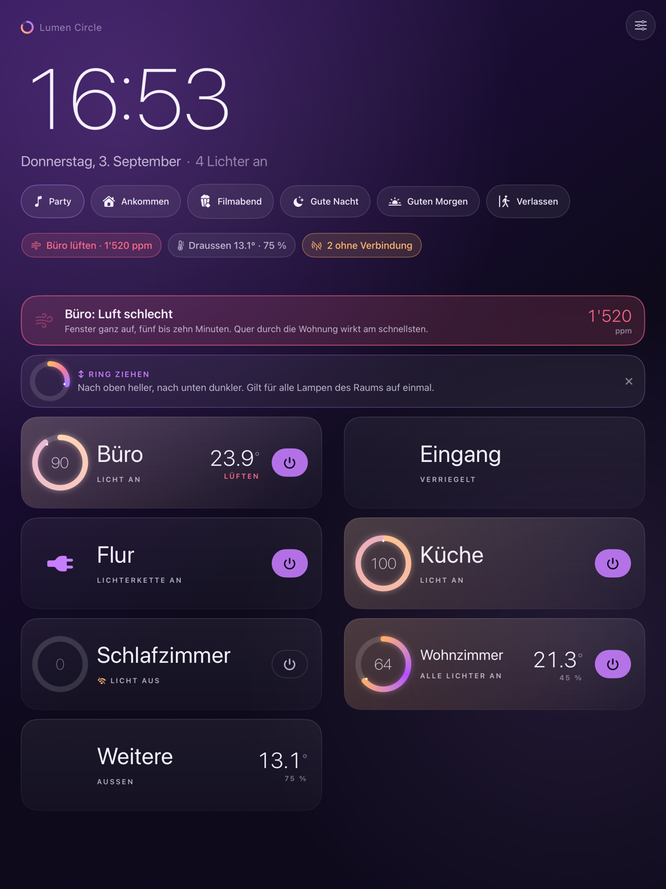
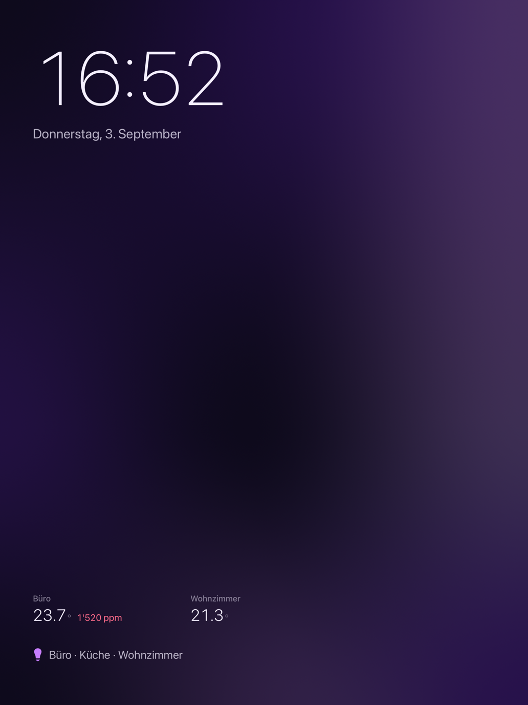
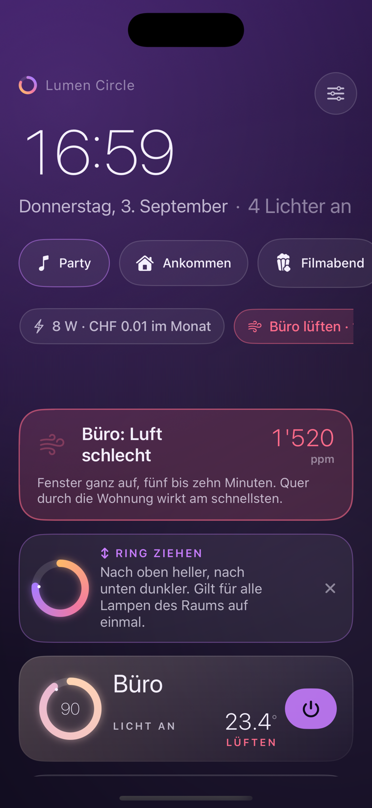
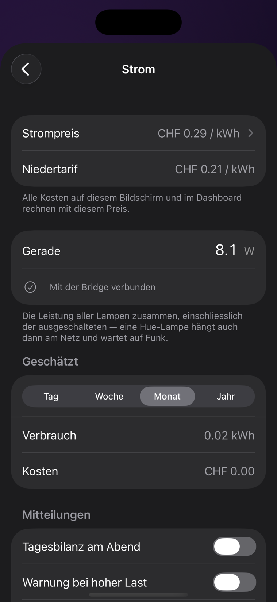

Für Apple Home und Philips Hue
Dein Zuhause auf einen Blick.
Ein iPad an der Wand, das man aus zwei Metern liest. Das iPhone als Fernbedienung. Die Apple Watch als Drehregler.
CHF 8 im Jahr die ersten vier Tage kostenlos
Noch nicht im App Store. Sobald die App freigegeben ist, steht der Link hier.

Drei Geräte, eine Wohnung
Jedes tut, was es am besten kann.

iPad
Das Wandpanel
Läuft rund um die Uhr. Zeigt Räume statt Geräte, Temperatur und Luft, und was das Licht gerade zieht. Nach gut einer Minute ohne Berührung wird daraus ein ruhiges Bild mit Uhrzeit und Wetter. Nichts brennt ein, nachts blendet nichts.

iPhone
Die Fernbedienung
Dasselbe Bild in der Hand. Ein Tipp öffnet den Ring, ein Zug dimmt den ganzen Raum. Wer weggeht und Licht brennen lässt, bekommt eine Mitteilung.
Apple Watch
Der Drehregler
Die Digitale Krone dimmt den Raum, mit Rasten in der Hardware. Auf dem Zifferblatt steht, ob noch Licht brennt.
Licht
Der Ring ist der Regler.
Wie weit der Bogen geschlossen ist, zeigt, wie viel Licht im Raum brennt. Seine Farbe ist die Farbe, die deine Lampen gerade haben.
- Ein Tipp zieht den Ring gross auf.
- Ein Zug regelt alle Leuchten des Raums zugleich; jedes Prozent rastet spürbar ein.
- Eine einzelne Lampe? Raum aufklappen, dort steht sie.
Dreissig Leuchten sind als Liste eine Kachelwand. Als Räume sind es sechs Zeilen. Im Kopf heisst es „im Wohnzimmer brennt Licht“, nicht „Leuchte 3 von 7 steht auf 72 %“.

Strom
Was das Licht kostet.
Hue-Lampen messen ihren Verbrauch nicht. Lumen Circle rechnet ihn, mit Kurven, die an echten Lampen gemessen wurden: für jedes Modell, von einem Prozent bis Vollgas. Eine halb gedimmte Lampe zieht oft nur ein Drittel.
- Jetzt: die Leistung je Raum und gesamt, auf dem Panel und im Bildschirmschoner.
- Tag, Woche, Monat, Jahr: Kosten mit deinem Strompreis, auf Wunsch mit Hoch- und Niedertarif.
- Neue Lampe? Ihr Profil holt die App von selbst.
- Auf Wunsch: eine Tagesbilanz am Abend, eine Warnung bei hoher Last, eine Monatsgrenze in Franken. Alle drei ab Werk aus.
Einmal den Knopf auf der Hue Bridge drücken, das ist die ganze Einrichtung. Die Messwerte stammen aus dem offenen Projekt Powercalc.
Ausserdem
Was es sonst noch tut.
- Luft, bevor es auffällt
- CO₂ steigt über Stunden, die Konzentration sinkt lange davor. Lumen Circle nennt nicht nur die Zahl, sondern sagt, dass Lüften hilft.
- Licht vergessen?
- Wer weggeht und Licht brennen lässt, bekommt eine Mitteilung aufs iPhone und an die Watch. Braucht die Standortfreigabe „Immer“. Ab Werk aus.
- Widgets und Komplikationen
- Brennt noch Licht? Die Antwort steht auf dem Homescreen und auf dem Zifferblatt, ohne die App zu öffnen.
- Zehn Farbwelten
- Von Aurora über Graphit bis Papier. Nachts wechselt das Panel von selbst in ein warmes Profil.
- Grosse Schrift
- Folgt der Textgrösse aus den iOS-Einstellungen. Ein Panel im Flur wird von allen gelesen, nicht nur von denen mit guten Augen.
- Kurzbefehle als Kacheln
- Saugroboter, Kaffeemaschine, alles ohne HomeKit: Was die Kurzbefehle-App kann, bekommt eine Kachel. Anleitung in fünf Schritten inklusive.
- Wecklicht
- Beginnt bei einem Prozent in tiefem Bernstein und läuft bis zur Weckzeit auf Tageslicht hoch.
- Party-Modus
- Das Licht folgt dem Takt. Gemessen wird nur der Pegel, direkt auf dem Gerät; aufgenommen wird nichts.
Einrichten
Drei Schritte, kein Konto.
-
Zugriff auf dein Zuhause erlauben.
Räume, Namen und Szenen kommen aus der Home-App. Die App spricht direkt mit HomeKit, ohne Anmeldung und ohne Dienst dazwischen.
-
Den Knopf auf der Hue Bridge drücken.
Damit zählt der Strom. Die App findet die Bridge im Heimnetz von selbst.
-
Den Rest fragt iOS, wenn es so weit ist.
Wetter, Mitteilungen, Weggeh-Meldung, Party-Modus: jeweils beim ersten Mal. Wer ablehnt, verliert genau diese Funktion, sonst nichts.
Voraussetzung ist ein Zuhause in Apples Home-App. Zubehör ohne HomeKit, etwa manche Geschirrspüler oder Saugroboter, erreichst du über einen Kurzbefehl.
Preis
CHF 8 im Jahr.
Die ersten vier Tage kostenlos, mit allem drin. Der Kauf gilt für alle Geräte mit derselben Apple-ID und lässt sich wiederherstellen. Kündbar in den Apple-Einstellungen, wie jedes Abo dort.
Lumen Circle ist noch nicht im App Store. Diese Seite beschreibt den Stand der Entwicklung.
Datenschutz
Bleibt auf dem Gerät.
Server gibt es keine, ausgewertet wird nichts. Das Gerät verlassen nur drei Dinge: die grobe Position für Apples Wetterdienst, der Kauf über den App Store, und die Modellkennung einer Lampe, etwa „LCT015“, wenn die App ihr Verbrauchsprofil aus der offenen Powercalc-Bibliothek holt. Kein Name, kein Ort, keine Angabe, wie viele du davon hast. Die ausführliche Fassung.